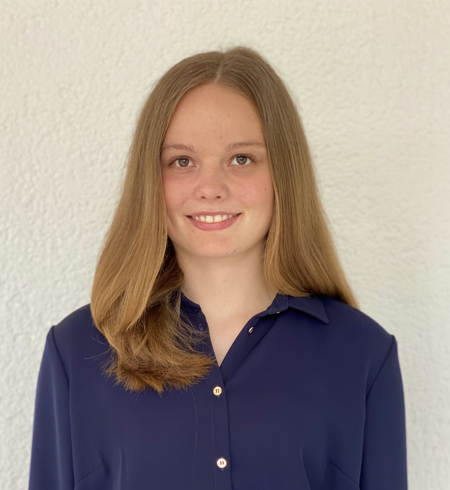

Welcome
I am a Master's student in Economics at the University of Zurich.
My research interests are macroeconomics and network theory. I am particularly interested in how production networks affect aggregate economic outcomes in the short run (inflation and shock amplification) and the long run (structural inequality and growth).

Photo
News
2025
Presented at the CEBRA Annual Meeting in Boston.
2026
Selected for the URPP “Equality of Opportunity” Early Stage PhD Scholarship.